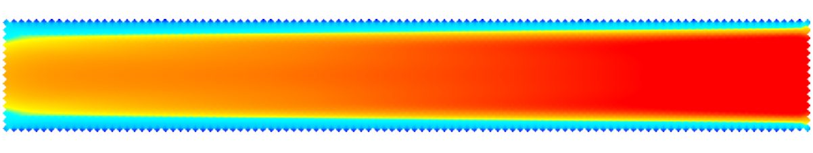

1.1 Solvers
TUFLOW solves the depth averaged 2D Shallow Water Equations (SWE). The SWE are the equations of fluid motion used for modelling long waves such as floods, urban stormwater inundation, dam failure hydraulics, ocean tides and storm surges. They are derived using the assumption of vertically uniform horizontal velocity and negligible vertical acceleration (i.e. a hydrostatic pressure distribution). These assumptions are valid where the wave length is much greater than the depth of water. In the case of the ocean tide, the wavelength is long, and even at the deepest parts of the ocean the SWE are applicable.
For the original TUFLOW Classic solver, the mass continuity and momentum conservation equations are available in the Section 6.3 of 2018 TUFLOW Manual. For TUFLOW HPC, the 2D SWE are described by the following partial differential equations of mass continuity and momentum conservation, in the X and Y directions for an in-plane Cartesian coordinate frame of reference. The equations are:
2D Continuity:
\[\begin{equation} \frac{\partial h}{\partial t} + \frac{\partial(hu)}{\partial x} + \frac{\partial(hv)}{\partial y} = S \tag{1.1} \end{equation}\]
X Momentum:
\[\begin{equation} \frac{\partial (hu)}{\partial t} + \frac{\partial (huu)}{\partial x} + \frac{\partial (hvu)}{\partial y} - \frac{\partial \left( h \nu_t \frac{\partial u}{\partial x} \right)}{\partial x} - \frac{\partial \left( h \nu_t \frac{\partial u}{\partial y} \right)}{\partial y} + gh\frac{\partial (z + h)}{\partial x} + (\frac{gn^2}{h^{4/3}} + \frac{k}{2 \mathrm{\Delta}x})h\sqrt{u^2+v^2}u = S_u - \frac{h}{\rho}\frac{\partial P_a}{\partial x} + \frac{\tau_{x,wind}}{\rho} \tag{1.2} \end{equation}\]
Y Momentum:
\[\begin{equation} \frac{\partial (hv)}{\partial t} + \frac{\partial (huv)}{\partial x} + \frac{\partial (hvv)}{\partial y} - \frac{\partial \left( h \nu_t \frac{\partial v}{\partial x} \right)}{\partial x} - \frac{\partial \left( h \nu_t \frac{\partial v}{\partial y} \right)}{\partial y} + gh\frac{\partial (z + h)}{\partial y} + (\frac{gn^2}{h^{4/3}} + \frac{k}{2 \mathrm{\Delta}y})h\sqrt{u^2+v^2}v = S_v - \frac{h}{\rho}\frac{\partial P_a}{\partial y} + \frac{\tau_{y,wind}}{\rho} \tag{1.3} \end{equation}\]
Where:
- \(h\) = Depth of water
- \(u\) and \(v\) = Depth averaged velocity components in X and Y directions
- \(t\) = Time
- \(x\) and \(y\) = Distance in X and Y directions
- \(z\) = Bed elevation
- \(n\) = Manning’s bed friction coefficient
- \(k\) = Energy loss coefficient, used for local energy losses
- \(\mathrm{\Delta}x\) and \(\mathrm{\Delta}y\) = 2D cell size
- \(\nu_t\) = Turbulent kinematic viscosity
- \(P_a\) = Atmospheric pressure
- \(\rho\) = Density of water
- \(S\) = Areal volume source (volume per unit time per unit area), used for rain and infiltration
- \(S_u\) and \(S_v\) = Areal momentum source terms (force per unit area per unit fluid density), used for local energy losses
The terms of the SWE can be attributed to different physical phenomena. These are:
- Propagation of the wave due to gravitational forces.
- Transport of momentum by advection.
- Horizontal diffusion of momentum or sub-grid scale turbulence (see Section 1.1.4).
- External forces such as bed friction, rotation of the earth, wind, wave radiation stresses, and barometric pressure.
For further discussion relating to the SWE, please see Section ??.
TUFLOW Classic and TUFLOW HPC use different solution schemes to solve the SWE. Both approaches are discussed in the following sections.
1.1.1 TUFLOW HPC 2D Solver
TUFLOW HPC is an explicit solver using a finite volume method. It computes the volume flow across cell boundaries. Volume cannot leave one cell without being placed in its neighbour. As a result, 2D volume is conserved and 2D mass error is 0%. The transfer of momentum across cell boundaries is computed in the same way and once external forces are considered (bed slope, bottom friction, and wet perimeters of non-uniform depth) momentum is conserved.
The explicit finite volume scheme applies the conservation of mass over the cell for calculating the rate of change of cell depth. In Figure 1.1, the cell centre (for the cell in question) is given the notation cc, while the surrounding neighbours are given the notation n1..n4. The u velocity at the left and right faces are notated u1 and u2, and the v velocities at the bottom and top faces are notated v3 and v4. The cell width and height are Δx and Δy respectively.
TUFLOW HPC uses an automatic adaptive timestep to achieve unconditional stability, as mentioned in Section ??. It solves the 2D SWE on a uniform Cartesian grid. Water depth/level is calculated at the cell centres, and velocity components at the cell mid-sides or faces in the same manner as TUFLOW Classic.

Figure 1.1: TUFLOW HPC 2D SWE Finite Volume Scheme Approach
The time rate of change for the cell averaged depth is shown in Equation (1.4).
\[\begin{equation} \frac{A\partial h}{\partial t} = \Phi_{1} - \Phi_{2} + \Phi_{3} - \Phi_{4} + S_{Q} \tag{1.4} \end{equation}\]
Where:
- \(A\) = cell area
- \(h\) = depth
- \(t\) = time
- \(\Phi_{1}\) to \(\Phi_{4}\) = the four face fluxes
- \(S_Q\) = sources (rain and infiltration)
The volume fluxes across the four cell sides and the net volume from source boundaries determine the rate of volume change and the change in depth. Source boundaries include SA, ST and RF boundaries, soil infiltration, evaporation, and any flow linkages to 1D elements via SX links. By computing the face fluxes for all model faces, and referencing these when computing the depth derivative for each cell, volume conservation is guaranteed to numerical precision. At “Head” boundaries, the above equation does not apply. Rather, the defined head (level) is directly used to calculate the water volume and associated depth in the cell.
The calculation of the cell side volume fluxes is available in either 1st or 2nd order spatially. For the 1st order scheme, this uses depth of the upstream cell (often referred to as upwinding), bounded to be greater than or equal to 0, and less than or equal to the surface elevation of the upstream cell less the bed elevation at the cell side mid-point. For the 2nd order scheme the depth at the face is computed as the average of the two cell averaged depths, however, this method in its simplest form is not total variation diminishing (TVD) and is known to be unstable. A hybrid method is implemented in which the depth at the cell face transitions from interpolated depth to the upstream depth (1st order upwinding) when the solution shows short scale reversal or upstream controlled supercritical flow.
The solution of the cell side fluxes includes the inertia and sub-grid scale turbulence (eddy or kinematic turbulent viscosity) term. Turbulence is detailed further in Section 1.1.4. The cell side fluxes may also be factored down by flow constriction factors where sub-grid-scale obstructions exist.
Due to the explicit scheme, the calculation of flux for one cell face may be performed independently of the other faces, and likewise the summation of flux for each cell volume may be performed independently of the other cell volumes. Applying the same algorithm to millions of data elements is well suited to modern multi-core CPUs,and particularly suited to GPU hardware acceleration.
The 1st order approach can experience numerical diffusion, like all 1st order schemes, and does not resolve strongly two-dimensional hydraulics (e.g. flow expansion downstream of a constriction) as well as a 2nd order solution. The 2nd order solution demonstrates no discernible numerical diffusion, and resolves complex 2D hydraulics, including hydraulic jumps as demonstrated using the UK EA Benchmark Flume Test 6A Collecutt & Syme (2017). When running HPC solver the 2nd order spatial scheme is the default and recommended approach.
For further details on the scheme, refer to Collecutt & Syme (2017). Note that at the time this paper was written, the scheme utilised cell centre definitions for velocity, which was prone to a zero-energy ‘checker-board’ mode in the solution. Subsequent to the paper, cell mid-side points were adopted for the definition of u and v velocities which has eliminated the checker-board mode with only very minor changes to the results.
1.1.2 TUFLOW Classic 2D Solver
The scheme is unlike the TUFLOW HPC solution in that it solves the same shallow water equations implicitly using matrices, allowing much larger timesteps (hence why it is important to monitor mass error in implicit schemes such as TUFLOW Classic to check that the solution is converging).
An Alternating Direction Semi-Implicit (ADI) finite difference method is used for TUFLOW Classic’s computational procedure. It was originally based on the work of Stelling (1984). The method involves two stages per timestep, each having two steps, giving four steps overall. Two of the steps sweeps through the model domain solving tri-diagonal matrices, hence the “semi-implicit”. Due to the implicit solution, TUFLOW Classic is not suited to being parallelised for multi-core CPUs or for GPU acceleration.
Step 1 solves the momentum equation in the Y-direction for the Y-velocities. The equation is solved using a predictor/corrector method, which involves two sweeps. For the first sweep, the calculation proceeds column by column in the Y-direction. If the signs of all velocities in the X-direction are the same the second sweep is not necessary, otherwise the calculation is repeated sweeping in the opposite direction.
The second step of Stage 1 solves for the water levels and X-direction velocities by solving the equations of mass continuity and of momentum in the X-direction. Tri-diagonal equations are generated and solved across the 2D domain by substituting the momentum equation into the mass equation and eliminating the X-velocity. The water levels are calculated and back substituted into the momentum equation to calculate the X-velocities. This process is repeated for a recommended two iterations. Testing on a number of models showed there to be little benefit in using more than two iterations unless there are rapid changes in the hydraulic conditions per timestep as may occur with modelling inundation from a dam break.
Stage 2 proceeds in a similar manner to Stage 1 with the first step using the X-direction momentum equation and the second step using the mass equation and the Y-direction momentum equation.
The solution as formulated by Stelling has been enhanced and improved to provide much more robust wetting and drying of elements, upstream controlled flow regimes (e.g. supercritical flow and upstream controlled weir flow), modifications to cells to model structure obverts (e.g. bridge decks) and additional energy losses due to fine-scale features such as bridge piers.
TUFLOW Classic solves the 2D SWE on the same uniform Cartesian grid as used by TUFLOW HPC. Water depth/level is calculated at the cell centres, and velocity components at the cell mid-sides or faces.
1.1.3 Cell Schematisation
TUFLOW 2D models discretise the real world as a grid of connected square cells. A fixed grid 2D domain is defined by a bounding rectangle in the same manner a computer screen or digital photo is made up of a grid of pixels.
The physical properties (i.e. ground elevations, surface roughness, etc) of a 2D cell are defined as a minimum at the cell’s centre, mid-sides and corners as described in Section 1.2.1. High resolution topographic detail for the cell’s storage and conveyance across the cell sides (faces) can be incorporated by using the Sub-Grid Sampling (SGS) feature available in TUFLOW HPC, as documented in Section 1.3.3. SGS has substantial accuracy benefits. It enables the use of much larger cell sizes without loss of hydraulic conveyance accuracy. It also results in less output sensitivity to the grid orientation.
1.1.3.1 Computational Points
To fully understand how TUFLOW functions, understanding of the computational role of the 2D cell and its four sides (also referred to as faces) is important. In the following sections, these model components are referred to as the ZC, ZU, ZV and ZH points, as shown in Figure 1.2. The description of these points are:
- ZC – the cell centre with ZC being the elevation used computationally within the cell.
- ZU – middle of the cell side of the Y-axis face with ZU being the elevation used computationally along the cell side.
- ZV – middle of the cell side of the X-axis face with ZV being the elevation used computationally along the cell side.
- ZH – corner of the cell. The ZH point plays no role in the computational hydraulics but is used for some output formats that require output at the cell corners.

Figure 1.2: Location of Zpts and Computation Points
1.1.3.1.1 ZC Point
The cell centre or ZC point:
- Defines the location where water levels are computed based on mass balance equation. Simply put, the net volume of water entering (or leaving) the cell across the four cell sides (or faces) must equal the change in volume of the cell over a timestep.
- The volume of a cell can either be simply based on the depth of water multiplied by the cell area or, if Sub-Grid Sampling (SGS) (Section 1.3.3) has been applied, a curve of volume versus depth.
- The ZC value is typically the elevation at the cell centre or, if using SGS, elevations are sampled across the cell, as outlined in Section 1.3.3. The ZC value plus the Cell Wet/Dry Depth is the water surface elevation that controls when a cell becomes wet or dry (note that cell sides can also wet and dry).
- The ZC value also determines the bed slope when testing for the upstream controlled flow regime in TUFLOW Classic (see Section 1.4.2) and TUFLOW HPC (Section 1.3.4).
1.1.3.1.2 ZU and ZV Points
The cell sides or faces:
- Control how water is conveyed from one cell to another using the momentum equation, or when upstream controlled flow occurs, the relevant flow equation (eg. weir equation).
- Are deactivated if the whole of the cell has dried based on the ZC elevation as described above.
- Can wet and dry when the whole cell is wet (see Cell Wet/Dry Depth). This allows for the modelling of “thin” obstructions such as fences and thin embankments relative to the cell size (e.g. a concrete levee).
- Surface roughness information (e.g. Manning’s n) is inspected at the ZU and ZV points. See Bed Resistance Cell Sides
1.1.4 Turbulence
Turbulence within rivers plays a significant role in determining the mean flow velocity field and is integral to the overall energy loss mechanism. During a significant flood event, the majority of the flow is carried within, or near to, the river or open channel system (the primary flow path), and the water levels on the surrounding floodplains are principally determined by the energy losses along this flow path. Manning’s equation is accurate for straight or slowly varying channels but does not calculate energy losses due to sudden changes in flow direction or velocity, and it does not capture super-elevation at bends. To automatically and accurately capture these additional energy losses, a scheme must be physics based with a turbulence closure model. The turbulence closure model must be thoroughly bench-marked against appropriate test cases at a range of resolution scales. It is important that the turbulence closure model is cell size and timestep independent (i.e. the turbulence closure model parameters do not need to be adjusted if cell size or timestep changes). Collecutt et al. (2020) provides benchmarking of the TUFLOW turbulence schemes.
There are three approaches available to model losses associated with turbulence when using TUFLOW HPC, these are discussed in Section 1.3.2. The default scheme for TUFLOW HPC is the Wu approach (Section 1.3.2.4). There are two approaches available to model turbulence when using TUFLOW Classic, these are discussed in Section 1.4.1. The default scheme for TUFLOW Classic is a hybrid approach that includes elements of both the Constant and Smagorinsky approaches (Section 1.4.1.2).
1.1.4.1 Dry Wall Treatment
All of TUFLOW’s viscosity approaches feature an enhanced treatment of the viscosity term at dry boundaries. The enhanced boundary treatment corrects for unrealistic flow separation that would otherwise occur at the wet/dry interface. Figure 1.3 presents an example of a benchmark model test with and without the enhanced boundary treatment. The top image is the result without the enhanced boundary treatment. Non-physical flow separation is observed along the oblique wet/dry boundary. The enhanced approach is shown in the bottom image. It does not suffer from the flow separation, and the velocity increases gradually from left to right as the water depth gradually shallows (the model has a horizontal bed). The correct water surface slope is produced when compared with theory.
All of the viscosity approaches are cell-centred. This guarantees symmetry is achieved in hydraulic results when using a symmetrical model.
The top image in Figure 1.3 shows flow separation along a dry oblique boundary without enhanced treatment of viscosity term. The bottom image shows a correct velocity distribution using enhanced treatment of viscosity term at dry boundaries.
Figure 1.3: Effect of Enhanced Dry Boundary Viscosity Term Treatment